SOBRE MIM
Como filho de arquitetos, comecei cedo a trabalhar com a tradução de desenhos feitos à mão em plotagens CAD. Em algum momento me
apaixonei pela visualização arquitetônica e desde então comecei a aprender na web a arte de dar vida aos pixels. Nos mais de 20
anos trabalhando no escritório com meus pais tive contato com todas as etapas do fazer arquitetônico, desde a concepção e
desenvolvimento do projeto até o acompanhamento da obra. Tenho experiência com vários softwares e gosto de aprender novas
ferramentas que melhorem a representação gráfica e facilitem a comunicação entre as partes. Atento aos detalhes, trabalho bem em
equipe e estou sempre disposto para trazer o melhor para os projetos.
FORMAÇÃO
2017 - 2023 Arquitetura e Urbanismo - Universidade São Francisco
EXPERIÊNCIA
2000 - 2024
WV Arquitetos - Apoio no desenvolvimento de projetos arquitetônicos e complementares, visualização
arquitetônica, elaboração de projetos para aprovação em condomínios e prefeitura, assistência no acompanhamento de obras.
IDIOMAS
Inglês - Lê bem, escreve bem, fala razoavelmente
Espanhol - Lê bem, escreve razoavelmente, fala razoavelmente
PROFICIÊNCIA EM SOFTWARES
R E S I D Ê N C I A
G R A M A D O
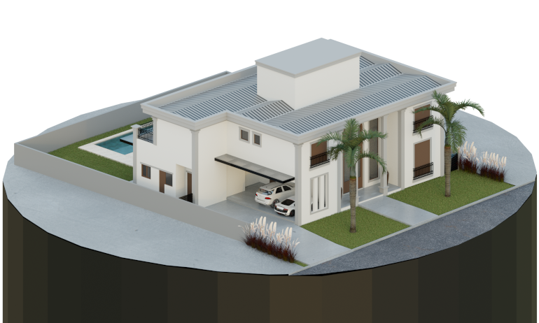
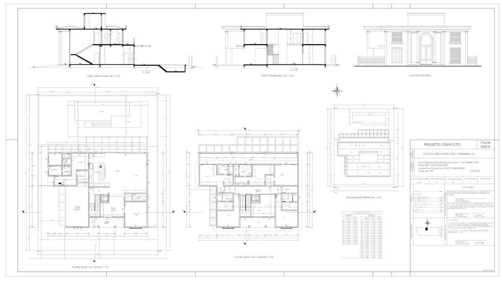
Projeto completo desenvolvido a partir de anteprojeto desenhado à mão de autoria dos arquitetos Waldemar e Vera Schilling. Foram
produzidas todas as plantas necessárias para aprovação junto ao condomínio e prefeitura municipal, bem como projetos complementares
(elétrica e hidráulica) necessários para a construção do projeto.
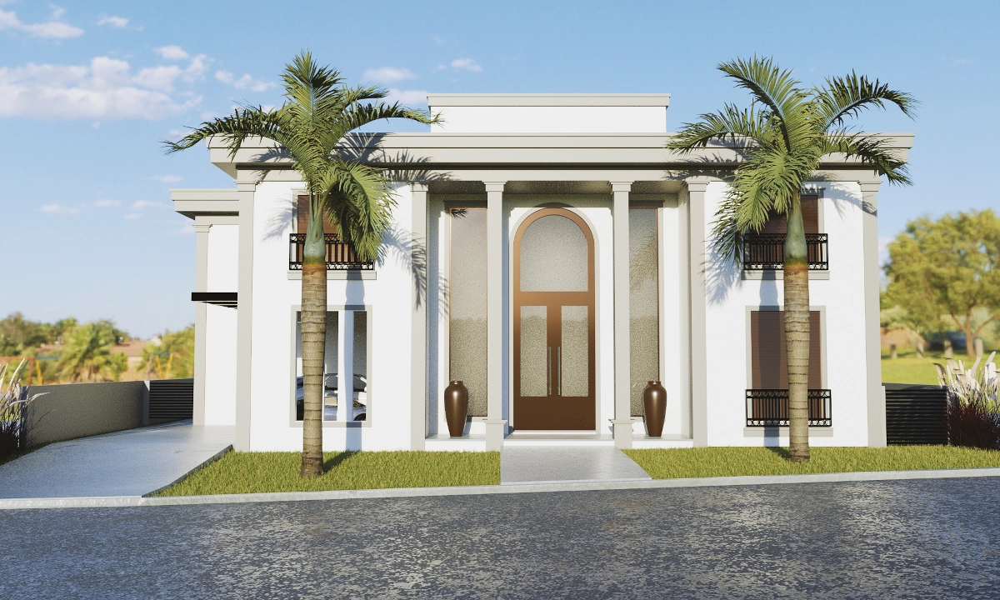
Visualização arquitetônica do projeto. As imagens produzidas foram importantes para a discussão de ajustes ao longo do
desenvolvimento do anteprojeto junto ao cliente até a definição da versão final.
R E S I D Ê N C I A
T O S C A N A
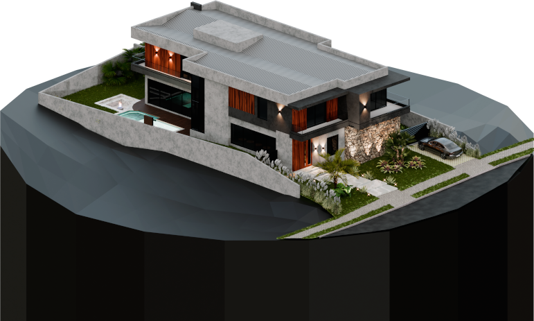
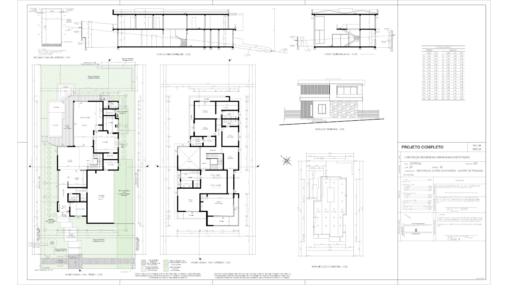
Projeto completo desenvolvido a partir de anteprojeto desenhado à mão de autoria da arquiteta Vera Schilling. Foram produzidas todas
as plantas necessárias para aprovação junto ao condomínio e prefeitura municipal, bem como projetos complementares (elétrica e
hidráulica) necessários para a construção do projeto.
Maquete eletrônica da fachada evidenciando a volumetria e escolha de materiais do projeto. Nesta composição, a imagem da residência
produzida digitalmente foi sobreposta à fotografia do terreno vazio, permitindo a visualização do projeto em seu contexto com o
entorno real.
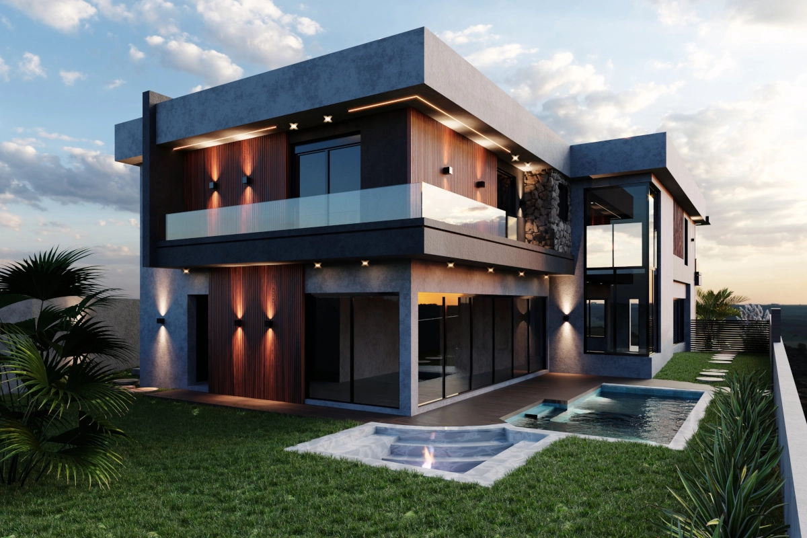
Visualização arquitetônica dos fundos da residência com destaque para a piscina e área de lazer, paisagismo e iluminação.
R E S I D E N C I A L
A L V O R A D A
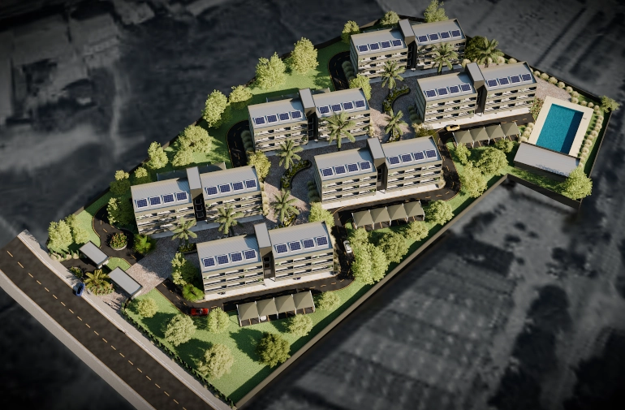
O Residencial Alvorada é o resultado do trabalho acadêmico da última disciplina de projeto na Universidade São Francisco. O projeto
consiste na composição de 6 blocos de apartamentos, cada bloco possuindo térreo com espaços de academia, salão de festas e 3 andares
residenciais com 6 unidades cada, com habitações de 1 e 2 dormitórios, totalizando 108 apartamentos. Os blocos são orientados de
forma a maximizar o melhor aproveitamento do percurso solar ao longo de todo ano.
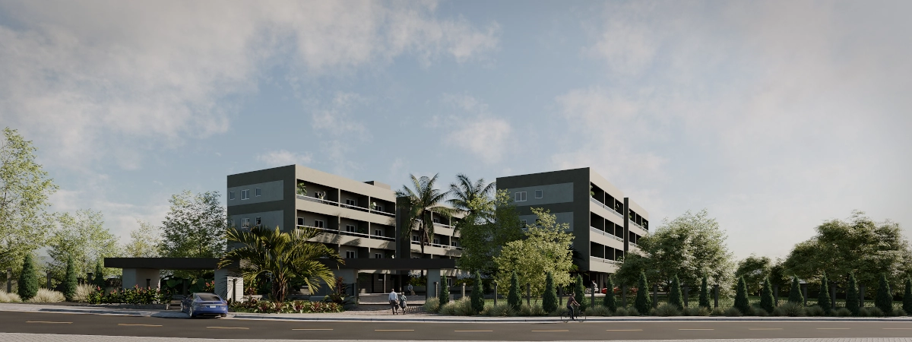
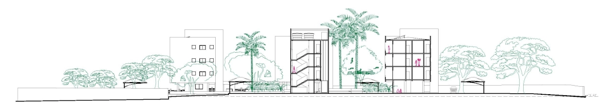
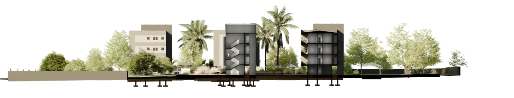
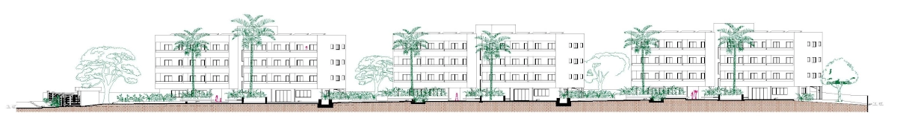

O trabalho foi uma oportunidade para o estudo de diferentes tipos de representação, desde o desenho técnico de plantas. cortes e
elevações até as ilustrações em 3D de vários ângulos e a planta humanizada dos apartamentos.
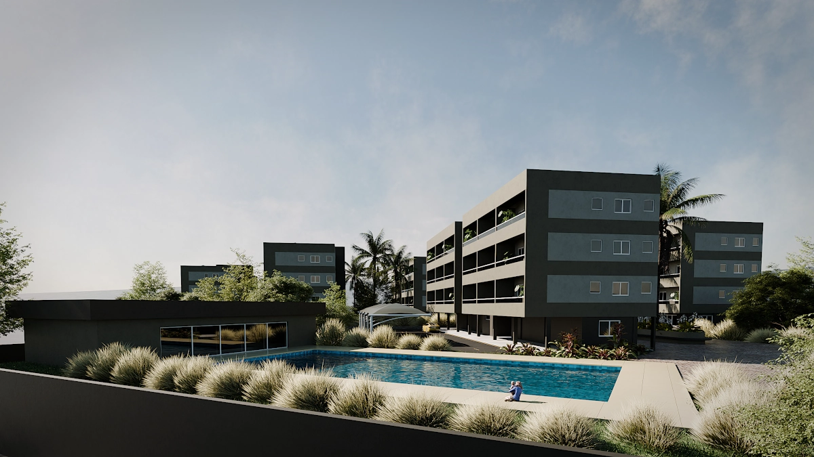
P A R Q U E
T I E T Ê V I V O
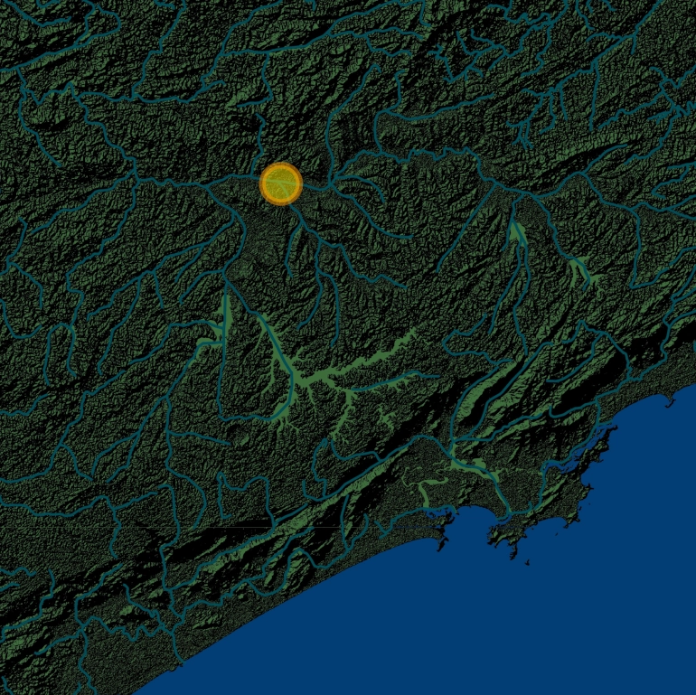
Este foi o projeto apresentado como Trabalho Final de Graduação (TFG) junto à Universidade São Francisco. Pelo estudo da história e
memória das águas da metrópole e através do levantamento das informações urbanísticas da região, o trabalho foi uma oportunidade de
reflexão sobre a cidade e sua relação com seus rios. O parque é imaginado num cenário onde o Rio Tietê é vivo, com sua mata ciliar
restaurada e com diversos equipamentos para desfrute da população.
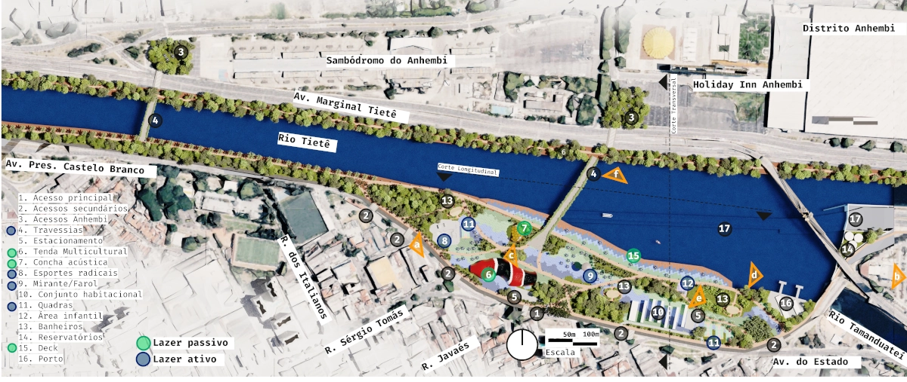
Vista do rio restaurado e navegável. Floresta urbana de espécies nativas da Mata Atlântica. A ideia do parque palco do teatro da
vida na cidade.
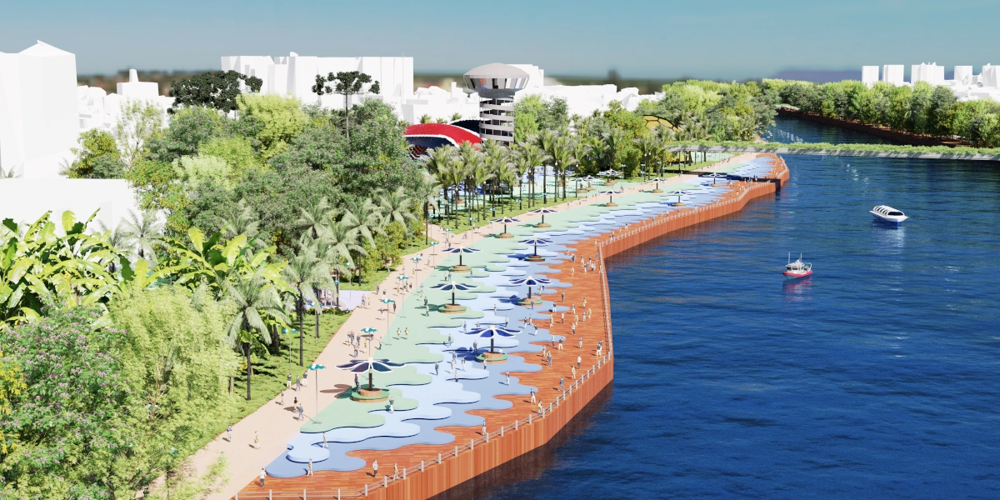
Amplas áreas de convívio que valorizam os pedestres e ciclistas, com diversos atrativos culturais rodeados pela natureza exuberante
em meio à metrópole.
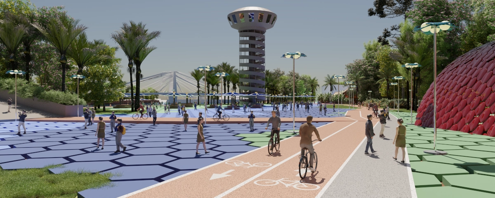
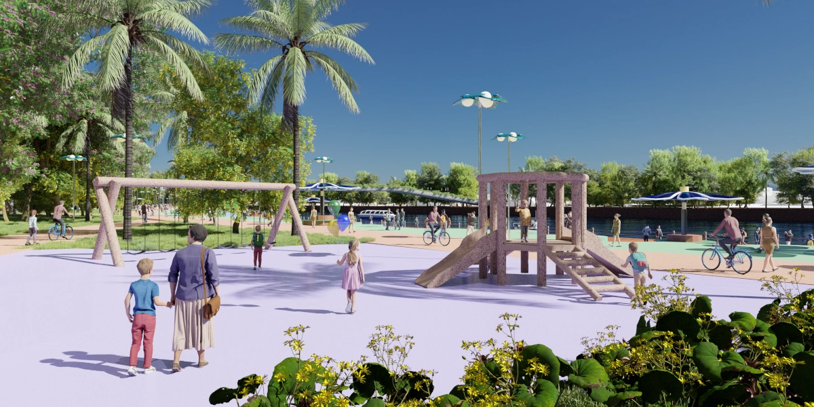